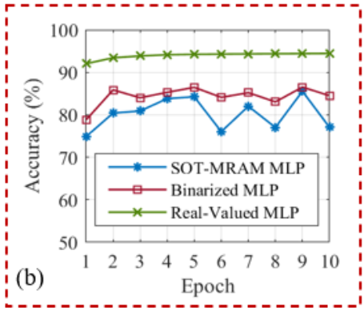

23 A Single-Cycle MLP Classifier Using Analog MRAM-based Neurons and Synapses
First, an analog SOT-MRAM based neuron bitcell is proposed which achieves 12× reduction in power-area-product compared to the previous most power- and area-efficient analog sigmoidal neuron design
The first claim in this paper is a 12x reduction in power-area-product compared to sigmoidal designs. This seems to be a good improvement, but how does it compare to something being used today, such as classical digital GPU based devices. They make their next claim for a MLP on MNIST which has two and 4 orders of magnitude performance improvement compared to other IMC and digital implementations.
The architecture-level results exhibit that our analog IMC architecture achieves at least two and four orders of magnitude performance improvement compared to a mixed-signal analog/digital IMC architecture and a digital GPU implementation, respectively, while realizing a comparable classification accuracy.
The questions I have while reading this paper is how does this compare to what is really being done today, and what is the performance metric claimed in the abstract if it is not classification accuracy?
Introduction
The IN-MEMORY-ANOLOG-COMPUTE architecture solves a classic processor-memory bottleneck known in today’s digital processors.
alternatives for von-Neumann architectures is avoiding the processor-memory bottleneck to realize an energy-efficient and area-sparing computation
The paper notes other IMC approaches leverage only XNOR/XOR capabilities inside memory subarrays. The reason for this is to implement the multiplication operation in memory (without having to push that data into a processor to compute the multiplication).
Other approaches fail in their lack of ability to perform the activation functions required.
In this paper, we use spin- orbit torque (SOT)-MRAM technology to implement both synapses and neurons within analog IMC subarrays that can be concatenated to form a multilayer perceptron (MLP) classifier that operates in a single clock cycle.
Operation
SOT-MRAM cells are capable of realizing two resistive levels, i.e. and . The combination of two SOT-MRAM cells and a differential amplifier can produce the positive and negative weights required for the implementation of a binary synapse.
Their MRAM implementation is capable of holding two values, thus similar to digital memory, however it can be accessed in parallel, and their in memory sigmoid can perform the activation on the entire line.
With this technology, they have proposed a crossbar structure that allows them to independently operate in Training and Inference modes.
They have shown the classic Wx+b structure in their layout, while the inference path (b) includes the structure to perform the sigmoid operation.
Conclusions
They conclude with a graph of their accuracies, which I believe has taken a little bit of poetic license to claim in their abstract:
while realizing a comparable classification accuracy.

There is a 10% difference between the real valued and proposed approach, which can be quite difficult to overcome. However, they do propose a very interesting idea of including the activation function in memory, and I think that there is potential for implementing other nonlinear functions with analog blocks in these memory cells.